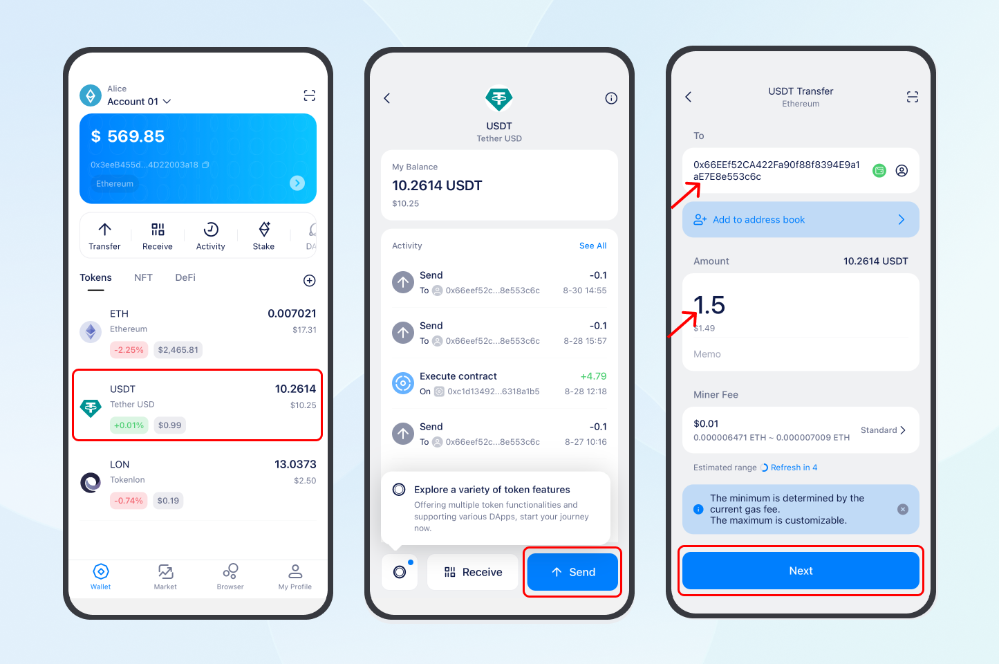
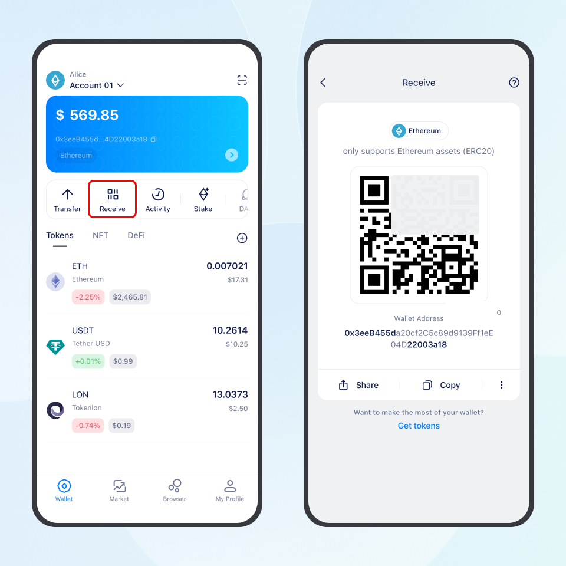

How to transfer tokens
1. Switch to the account that holds the tokens in imToken.
- To switch accounts, tap the account selector in the top left corner of your wallet to open the “Select account” page, then select the corresponding account.
2. On the account homepage, tap the token you want to send.
3. Tap Send to open the transfer page, then enter the receiving address and amount. There are three ways to enter the receiving address:
- Direct entry: Paste the address.
- Address book: Tap the icon on the right side of the address field, then select an address from your address book.
- Scan a QR code: Tap the scan icon in the top right corner, then scan the recipient’s address QR code.
💡 Tip: Before sending tokens, make sure the receiving address is on the same network as your current imToken account. For example, use an Ethereum receiving address when sending from an Ethereum account, an Arbitrum receiving address when sending from an Arbitrum account, and a TRON receiving address when sending from a TRON account.
4. Check the transfer details and estimated network fee, then tap Next.
💡 Tip: Each blockchain network requires its corresponding token to pay network fees. For example:
- Bitcoin (BTC): You need BTC to pay network fees when sending tokens.
- Ethereum Mainnet: You need ETH on Ethereum Mainnet to pay network fees when sending tokens.
- TRON: Transfers consume Energy and Bandwidth. If these resources are insufficient, TRX will be consumed.
- Arbitrum: You need ETH on Arbitrum to pay network fees when sending tokens.

5. On the signing page, double-check the receiving address, token, amount, and other details. Once everything is correct, tap Send and enter your password or use biometric authentication to sign the transaction.
6. After submitting the transaction, return to the homepage and open Activity to check its status. Once the transaction is successful, you can view its Tx ID and other details on the transaction details page.
Tips
- Use the address book: Save frequently used receiving addresses in your address book and select them directly when sending tokens. This helps prevent transfers to the wrong address due to manual entry errors.
- Double-check after scanning: Even if the address is filled in automatically by scanning a QR code, check it again to make sure every character is correct.
- Seeing an “Invalid Address” message? This usually means the receiving address does not match the network you are sending tokens on. Replace it with the correct address on the same network.
- About network fees: Network fees are collected by the corresponding blockchain network to confirm transactions. imToken does not charge any transfer fees.
How to receive tokens
1. Switch to the account where you want to receive tokens in imToken.
2. On the account homepage, tap Receive to open the receiving page.
3. Copy the receiving address, or tap Share to send the receiving QR code to the sender.
💡 Tip: Make sure the sender uses the same network as your receiving account in imToken. For example:
- Receiving in an Ethereum wallet: The sender must select the Ethereum (ERC20) network.
- Receiving in an Arbitrum wallet: The sender must select the Arbitrum One network.
- Receiving in a TRON wallet: The sender must select the TRON (TRC20) network.
Click here to view all networks supported by imToken.
4. After the sender has successfully sent the tokens, wait a moment and refresh the wallet page to see the tokens you have received.

Tips
1. About arrival times: The time it takes to receive tokens depends on blockchain network conditions and the status of the sender’s transfer. Check the on-chain records for confirmation.
2. Tokens received but not showing up? If the on-chain transaction status shows success but the tokens do not appear in imToken, first check that you are viewing the correct account and network. If both the network and address are correct, try adding the token manually to display it. Click here to learn more: “How to Manage and Add Tokens in imToken?”